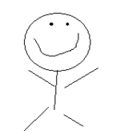
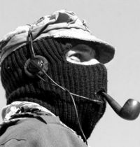

De: La Frikipedia, la enciclopedia extremadamente seria.
De: La Frikipedia, la enciclopedia extremadamente seria. De: La Frikipedia, la enciclopedia extremadamente seria.
Entrega de Grand Theft Auto diseñada en los laboratorios de la Frikipedia por un par de admins y que ha dado como resultado un nuevo juego donde los personajes tratarán de huir de la policía, matar a Chuck Norris, destruir las bandas rivales de lamers y demás misiones. Todo ello, se desarrolla en la Ciudad Frikipedia, urbe situada en pleno desierto del Gobi y que crece constantemente.
Eres Miguel Peldáñez, un inadaptado social al que echaron de casa a los 2 años por estar 10.000.000.000.000 horas seguidas viendo dragon ball y cargarse el sofá y la abuela con un kamehameha de verdad.
Con la herencia que te dejó la abuela y la paga de 10 euros semanales, viviste sin trabajar ni estudiar en una casa de alquiler hasta los 20 años, pero ahora... CHAN CHAN CHAN!!!!! Se te a acabado la pasta y el casero te quiere meter una paliza de muerte por llevar 2 meses si pagar la cuota y por la factura de Internet , que venía dentro de una caja de zapatos de lo grande que era.
Tras escapar del casero que te perseguía en coche, llegas hasta el aeropuerto donde ves un cartel que pone FRIKIPEDIA CITY, pillas un billete y te piras volando ( después de esperar 5 horas claro, que las cosas en los aeropuertos no van tan rápido ). Ahora estas solo en una ciudad friki llena de peligros. Pero eso a Miguel Peldáñez le da igual. Va tan feliz andando, intentando encontrar trabajo para ganar dinero y pillarse una casa de alquiler, para estar en Internet y ser feliz. Mientras va andando ve un deportivo huyendo de la policía, luego salta por una rampa y el piloto salta del coche cayendo exactamente al lado del protagonista. El policía salta también por la rampa y explota. El tío del coche que resulta ser Donkey Kong, el conductor de la Mafia humanística.
Armado con un salami,te amenaza con matarte si no le escondes de la poli. Obedeces, y para agradecértelo te da 500 pedrólares y su número de teléfono, con ese dinero podrías vivir en una casa de alquiler cómodamente, así que al día siguiente le llamas para hacer tu primera misión en la mafia. Poco a poco vas conociendo a gente más importante dentro de la mafia y haciendo misiones mas difíciles, al cabo de 2 meses conoces al capo Khazike y a su ornitorrinco mascota. Él te dice que eres un gran mafioso pero que eres poco útil por eso te traslada a donde sus compañeros los Traficantes.
Aquí la historia se repite, vas haciendo más misiones y al final Azulejos te envia a matar a Kraken, el lider del clan Galáctico para vengarse del robo de los dos motores de doble ion, pero tras pelear con casi todo el clan en una guerra de bandas ves a Thabita y te enamoras de ella. La apartas a un lado para que no le de una bala y ella para agradecértelo te come todo el rabo, te besa y os hacéis novios. Trabajas ahora para el clan galáctico pero para arreglar los destrozos que has hecho tienes que pagar 1.469.605.740.985 pedrólares.
Como no tienes ese dinero, te quedas sin casa donde vivir, pero tranquilo puedes vivir con tu novia y follártela todos los días y ser felices. A los 4 dias descubres que Thabita está muerta y al parecer, asesinada por una banda de mafiosos. Investigas y descubres que han sido los Dexter, te infiltras entre ellos para descubrir quién a sido y vengarte luego. Descubres que a sido Nanito y peleas contra él, luego toda la banda te descubre y peleas contra el capo Dexter, que de un machetazo te deja incosciente, y dándote por muerto, te abandona.
Despiertas en un hospital y a tu alrededor ves gente jebi, tienes amnesia, te dicen que eres un miembro de los Pacino, haces misiones con ellos y descubres que te han estado utilizando para sus trabajos sucios, decides matarlos a todos, al salir a la calle vienen el clan Gunslinger y el Traficantes para asesinarte por abandonarlos y traicionarlos.
Vas corriendo a la policia y ellos te cobijan salen 20.000 policias y admins y rodean a los mafiosos. Los acribillas y la policia te da las gracias y una medalla por atraerlos y ayudarles a acabar con las mafias (ellos no saben que tú eras tambien mafioso). Te haces famoso y vives DPM en un chalet con todo pagado, internet gratis y un perro salchichón llamado Pancho.
FIN
| Lo cualo | ¿lo cuál hace? | ||||||||||||||||||||||||||
|---|---|---|---|---|---|---|---|---|---|---|---|---|---|---|---|---|---|---|---|---|---|---|---|---|---|---|---|
| Ahp1994 | Es el Padrino de la Frikipedia City se llama DeXteR e intentará ser el mejor padrino después de KrusheR que hayáis visto XD® Pertenece a la familia mafiosa: Dexter | ||||||||||||||||||||||||||
| Hitman | Este es el mas despiadado y silencioso asesino profesional le llaman Hitman pero su verdadero nombre es El Calvorotas, se dedica principalmente a matar por placer a: Reggaetoneros, Emos(no, estos no, pues ya se mueren solos) y toda la escoria Anti friki. | ||||||||||||||||||||||||||
| Nanito | Asesino profesional traído desde el Ragnarok online, pero como no se sabe mucho de el es imposible que lo contrates para asesinar muy seguido, se dice que lo castigan amenudo, por lo cual es difícil que te haga el trabajo sucio. | ||||||||||||||||||||||||||
| Cleptuno | Despiadado asesino, frío como el hielo y que solo se mueve por una cosa, los leuros, trabaja para la familia mafiosa Dexter. | ||||||||||||||||||||||||||
| Starkiller | Su Sable de Luz no ha conocido la derrota...hasta ahora...las cosas se le pondran dificiles en GTAFP...pero su experiencia como Sith puede ser un verdadero quebradero de cabeza para sus adversarios, ¡CUIDADO CON EL! Suele estar reclutando Sith en el Chat Frikipedico. | ||||||||||||||||||||||||||
| Anticristo2007 | ser incomprendido que llego a la ciudad frikipedia tras una busqueda en gugel de una ciudad magica e perfecta y nueva, con frikis hemos destruido bandas emos en un lugar alejado de la ciudad (lee mas abajo), eran bandas como ¿ehhh?, ¿ahhhhh? ¿bueno quien se recuerda los nombres?. | ||||||||||||||||||||||||||
| Alefaso | Frikih que encuentras bajo del puente de ciudad frikipedia 20 horas al dia, es el proveedor de armas de la familia todas las armas son obviamente conseguidas a base de Cheats como UNREALLISUMMONWARHEADHAMMER o mas simples y potentes como CALLOFTHEROLLKICK, es el tipico archivo corrupto con BUGS o GLITCHS que si le apuntas con un arma cuando anda bajo el puente, te da lag, escapa ala cima de un edificio y se lanza en paracaidas hecho con los intestinos de un EMO que mato (con cheats claro), la unica falla de este BUG es que mientras cae en paracaidas puedes lanzarle una santa hostia y queda muerto, aunque no es gran problema, ya que aparecera medio segundo despues en la entrada del hospital de frikipedia city comiendo una santisima Pasta Frola. | ||||||||||||||||||||||||||
| Nubosal | Friki venido a Ciudad Frikipedia de turismo, queriendo ir a visitar la Montaña de los Mormones, pero llegó en momento de matanza, y se unió a Los Dexter. Este tipo, gracias a sus poderes Telepáticos, conotrola a los Nubosal les paga con segundos de reggaeton a cambio de favores | ||||||||||||||||||||||||||
| Osama Bin Huevo | Salido de la carcel de ultra seguridad de la Ciudad Frikipedia,despues de | ||||||||||||||||||||||||||
| v_for_vedetto | rechazado por la hermandad del mal, akatsuki, y los care pelota,por sus metodos de tortura, y escrupo , espera que los dexter lo dejen hacer sus travesuras, para algunos la maldad encarnada, para otros el "el dandy del sur" . |
| |||||||||||||||||||||||||
| Mexicanspartan117 | Este es el mas de culto de los dexter. Su parecido con Gordon Freeman le ayudo a estudiar una carrera y graduarse con honores en el area de medicina, especializado en la extraccion de |
| Lo cualo | ¿lo cuál hace? |
|---|---|
| [[Imagen:|150px]]Calico | Líder del clan Gunslingers, que trafican con armas futuristas (a lo Intergang) y objetillos mágicos de diversa índole. Pretende llevar el clan al puesto número uno de las familias. |
| Nadaquever | Bueno pueden apreciar a un jebi pero lo que no saben que él solo se viste así para salir, porque normalmente es el ministro de economía de la Ciudad Frikipedia, y cuando sale es para ser un asesino a sueldo |
| Lemmy | Lemmy es un hijo de puta peligroso que pretende acabar con sus enemigos con sus verrugas, su chupa de cuero, y su cinturón de balas. |
| Lord Black Wizard | Lord Black Wizard es el otro Jebato de aqui |
| Guilfer | Guilfer es un zorro en llamas muy peligroso que acaba con sus enemigos a arañazos y a mordiscos, y por muy bajo precio es asesino a sueldo |
| Roms | Parece judío, pero en realidad no lo es |
Hoy, día 20 de Enero, a las 23:10, el clan Gunslingers ofrece su apoyo a la familia Traficantes, a cambio de tres toneladas de azulejos puros y sin cortar.
| Lo cualo | ¿lo cuál hace? | ||
|---|---|---|---|
| Kraken | Soy el Ingeniero de los galacticos. | ||
| Secret Zombi | Yo Soy
El zobie Secreto No me puedes encontrar Yo te encontrare Por supuesto Puedes ponerme el Esos dos Trucos para encontrarme pero No me veras te encontrare,Te voy a pegar,Voy comerme Atodas tus plantas ,y Te las Veras conmigo,Yo soy el Asesino del Clan galáctico,No me puedes | ||
| Thabita | Piloto de la "Frikinesser". Pirateo tampones de silicio de contrabando. Algunas veces vendo mis encantos como "Dama de afecto negociable" a cambio de cerveza, conocimientos frikis, cérdito ilimitado en Armani o montañas de oro. Fundadora y Presidenta de ADIDAS, Anormales, dementes e idiotas directos a la salida, S.A. Veraneo en Mundodisco. | ||
 El Moloco El Moloco |
Trafica sables láseres hechos en Indochina en el submundo del barrio Universitario donde actualmente reside. Es bipolar y peligroso, ya que en su otra personalidad cree que es Charlie de Mente siniestra. Se lo ha visto usando peluca porque odia su pelo castaño debido a influencias neonazis. | ||
| Artemio | Un tonto con suerte que consiguio meterse en este Clan | ||
| nRikee | Señor: ¡Es el hombre que necesitamos! Se cree muy guay porque tiene una pistola tachadora, que no duda en usarla. Si te descuidas desaparece. | ||
| Mierdashi | Un flipao que no contento con los que le pagaban en konhoja se vino a joder a Frikipedia City, tiene la capacidad se sacarse perros de los cojones con unos papelitos muy chungos, su pasatiempo es darle ostias a los que jodan a los del clan galactico y ver tias con el sharingan.... a que te gustaria no salidillo??? | ||
|  Claudiobueno123 | Este es el increible asesino del clan galactico, su mirada asesina, puede demostrar que puede matar 812 pajaros de 1 tiro, es tan frio y cruel, no tiene sentimientos, ni si quiera es emo, solo quiere sangre y destruir, claro que Chuck Norris lo vence, pero el no quiere admitirlo. En la imagen se puede apreciar la mirada diabolica de este tio... | ||
| phoenix556 | Soy un agente del Clan Galático, lo que tengo que hacer es ayudar a mis amigos del clán galático y a los polis del FC a buscar el asesianto de un miembro del clan galático, soy un agente espacial. | ||
| Pentagram Lord | El blackero del clan siempre lleva corpse paint y nadie sabe su identidad secreta, solo no te metas con este tipo, es un practicante muy avanzado de las artes negras y si tienes planes de hacerle algo, piensalo dos veces o cuando despiertes estaras empalado frente a un castillo. | ||
| bender | Soy el Ingeniero de maquinas asesina gente,gracias a el el clan galactico dominara frikipedia city i alguna city mas,para mas consultas visiten el bar de moe. | ||
 blink228 blink228 |
Soy el piloto del Clán Galático que te puedo lleavr a todas partes, también soy un agente que busco con los polis un asesinato. | ||
| merbenCLKGTR | Mercedes Benz CLK-GTR... si quieres viajar con estilo... viaja conmigo... | ||
| LANER | Si saben lo les conviene no se metan con este tipo, ingeniero en armamento y armero del clan descubrio por su paso a frikipedia city que las gatling-gun y las AK-47 estan al alcance de los canis (como se sabe el odia a los canis, no por nada sobrevivio a Resident Evil: Cani Virus.) y al descubrir que tiene talento para boicotearlos fue convocado a este clan, es por eso que solo se enfoca en dotarlo con juguetes | ||
| Thelordg95 | Cuidado! el miembro más loco del clan está aquí | 150px [[Usuario:Friki R|Friki R |
Cuidado te van a machakar en el juego no pongas fuckfuckfuck+chuckmode+6 que tu quieras cuidado fuera del bar de moe poner Fuckfuckfuck como codigo vendra uno llamadoamado Friki R no le puedes encontrar sin truco |
El dia 21 de enero a las 25:61 am el clan galactico le robo a los traficantes dos motores de doble ion y esta trabajando con ellos para conseguir una super arma. El dia 4 de diciembre a las 12:28 pm el clan galactico finalizo la construccion del arma, las pruebas indican que su capacidad para tirar granadas flash y de humo la convierte en la maxima arma porculera de todos los tiempos.
| Lo cualo | ¿lo cuál vende? |
|---|---|
| Azulejos | Pues yo me encargo de traficar con |
| Dorayaki | Su verdadero nombre es Pietote, pero se le conoce como Dorayaki ya que en el interior de cada uno de estos mete y remete mierda de los niños de S.Ildefonso hasta que parece un |
| SeSteve | Yo me encargo de traficar con perros (o esos bichos) P.D: Yo soy el de la gorra, no confundirse ¡eh! |
| karlinx | pues yo trafico toda clase de cosas, entre ellas estan: teletubio en polvo 10000 veces con mas poder que la hierba, happy pass para los cafes con piernas, juegos piratas, osos de peluche de esos que le gustan a tu hermana, bichos, a tu hermana, helados, cash, de todo. asi que si nececitas algo avisame, pero no trafico nada de lo que trafican los que estan arriva . |
| Spsd | trafico pelis porno, queso, leche, jabón, marihuana, cervesa, coka, arena, oxigeno y X; naci de una galaxia distante (no dire cual) y llegue a la tierra por medio de un intento de [atada giratoria de jackey chan (por eso estoy vivo) y cai en gringolandia y planeo conquistarlo y obligarlos a ser esclavos de españoles y latinos y toda raza que en su pais natal se hable español.(si quieres ayudar a la conquista ve a mi discucion) |
| Alvarocamino | Su verdadero nombre es Tiburcio pero su apodo es Alzombie, es el más drogadicto de todos los traficantes , se fuma toda su cereal chocapic y despues no tiene mercadería para vender por eso que tiene que ejercer el labor de prostituta para poder |
Hoy, día 21 de Enero, a las 15:23, los traficantes sacan el puesto de helaos donde camuflan el pegamento y los azulejos para la venta ambulante.
| Lo cualo | ¿lo cuál se Dedica? |
|---|---|
| Bladguer (el robaalmas) | Este amiguito ni siquiera es Pacino, realmente es un fabricante de droga que esta unido a la Asociación Nacional de los Waffles, al final del juego mata a todos, si sabemos que es triste pero ya sabes cuando roban tu alma ya no se puede hacer nada al respecto. |
| Scarface | Líder de la familia de los Pacino y ademas de sus trabajos ilisitos fue Alcalde de esta ciudad durante 1994 a 1996, pero, huyo con 100 millones de dolares que eran de impuestos municipales, a las Islas Marias, pero luego regreso, por que, una prostituta, lo drogo, le robo el dinero, un igado y un riñon en un Motel. Grasias a una cirugia plastica, se cambio de identidad, pero al operarlo, de lo feo que estaba, batallaron y le quedo una cicatriz, solo en la comunidad criminal, saben quien es.
de donde saco el diner si la prostituta le robo? |
| Zay dragons | Zay dragons Metalero mal vividor escapado del mundo de South park, si precionas L1+R2 mientras bailas aserejé, revela el secreto de la rosa y la escopeta que trae, sacando el logo de "Guns n' Roses" para que Slash te mate de un Solo de guitarra de tropecientos mil hamperes. |
| Y2F | Y2F Loco de la WWE, que cree que puede llegar a ser luchador (aunque es posible), escribe articulos muy malos, veelos en su articulo. |
 Ronaldo24 Ronaldo24 |
Riflefílico peligroso. Es el hijo perdido de Rambo, pero como en la pelea se gana y se pierde, ha perdido algunas extremidades. Han sido reemplazadas con brazos bionicos y algunos chips como Terminator. También ha tenido entrenamiento intensivo en manejo automovilístico. ¿De donde crees que ha salido el protagonista de Need For Speed: Most Wanted?. Es el distribuidor principal de armas de Los Pacino. ¿De toda la Frikipedia City? Quien sabe...
|
| F bigboss | edicion postuma de Y2F, el cual es el mismo; Regreso de la muerte para volver a escribir en frikipedia pero ahora, en las noches se convierte en un mono disfrasado de Serpiente Solida el cual se dedica a disparales a gente que camina frente a su casa con dardos tranquilizantes para elefantes. |
| Lo cualo | ¿lo cuál hace? |
|---|---|
| Khazike Khashondo | Capo de la mafia humanística y miembro corruto de la policía de Ciudad Frikipedia. Se dedica a la prostitución (a ejercerla, se entiende). Sus enemigos suelen ser encontrados con los cojones donde antes tenían las amígadalas. |
|  Carlsen | Hombresillo que busca la paz (unas fuentes dicen que trafica junto a los arellano) Y conseguir una buena dosis de Jack Daniels. Este ser trata de establecer la paz frkipedista para el bien de esta comunidad. Este personaje a sufrido grandes desepciones personales lo cual le a dado fuerza para combatir el mal. Actualmente trabaja en un burger gracias a sus audiculares multiusos.
Su especialidad es mandar a sus trabajadores a desaparecer lammers que perjudiquen el bienestar de esta sociedad. |
| 100px Carlos Salavert | Más nocivo que fumar amianto. Su principal virtud es la paciencia y su mejor cualidad el escaqueo, puede estar días enteros escaqueándose de sus responsabilidades y no sentirse culpable por ello. |
| D.K., no Donkey Kong | Conductor especial de la mafia humanística, si quieres un conductor para hacer un trabajo especial sólo llámalo. En sus trabajos cumple con sus tres reglas: 1)Nada de nombres, 2)Siempre pide el doble de la paga y 3)No te pares a ver lo que llevas, incluso personas. D.K. suele llamarse aveces Frank Martin. |
| Pfarrer_angel | El brazo fuerte de la mafia humanística, llamalo si quieres cargarte a algun enemigo de la mafia humanistica y ahi estará (esperando una buena paga). Pero, pero, no cometas el error de pensar que esta a tus ordenes: si en algun momento les das algo minimamente similar a una orden, te matará a ti, a tu familia, a tu perro, a tus amigos y a un vendedor de pipas despistado que pasaba por ahi, y si se aburre, seguira matando a gente que se relacione contigo de cualquier manera, hasta que se de cuenta de que el tambien se ha relacionado contigo, y la distorsion espacio-temporal-mental que le provocara eso hara que deje de matar. |
| Storm Trooper | Desde ese momento se volvió loco y comenzó a odiar a cualquier cosa que se moviese. Ciertas personas dicen que encontro su blaster en el set de filmación,que de casualidad disparaba. Ahora armado salió a las calles a disparar y matar a cualquier cosa que se moviese, la mafia humanistica lo convenció de unirse a la mafia, viendo su potencial, lo hicieron trabajar y ahora ocupa un lugar en la mafia humanistica. |
Hoy dia 22 de mayo a las 21:45, estos mafiosos han hecho un pacto con los traficantes para destruir cualquier intento de la pòli de tumbar nuestros importantes Viznez.
estos son los tios que si bien la mayoria no son administradores se encargan de lamerles la botas a ellos tienen apariciones en la hitoria y mas de alguna ecena pr0n de dialogo
| ¿lo cuál se Dedica? | |||||||||||||||||||||||||||
|---|---|---|---|---|---|---|---|---|---|---|---|---|---|---|---|---|---|---|---|---|---|---|---|---|---|---|---|
 |
Es el Sargnto hiper-mag-guay de la Policía federal de GTA Frikipedia City. Se dedica a atrapar delincuentes y, una vez en la cárcel, los flagela con peines descerdados hasta la muerte (Pero no se lo digáis a nadie que si se enteran lo despiden). | ||||||||||||||||||||||||||
| El poli malo de la ciudad, el que primero dispara y luego pregunta, y si no le contestan repite la operación, le gusta irse de bares. | |||||||||||||||||||||||||||
 Sánchez Sánchez |
El Balrog, si te acercas, te chamusca. El crimen organizado estaba a salvo hasta que llego a la ciudad, creador del C.I.P.O.T.E. (Cuerpo Interrogatorio de Putas o Terroristas Escandinavos) usa los metodos mas eficaces para sonsacar información, como amenazar con hacer comer una mierda a su interrogado, o con hacerles pasar una noche con Carmen de Mairena, miticas son ya sus persecuciones a los traficantes en las que siempre muere alguien, o la vez que mando quemar por completo la ciudad para eliminar toda la marihuana posible, lo que produjo que la ciudad sufriera paranoias y atontamiento durante toda una semana, ya es una leyenda por haber mandado al ejercito de aire y tierra, comandando el un tanque con el que destrozo la iglesia, el ayuntamiento y el puticlub. También castigo al hijo del alcalde por corretear por la hierba del parque con doscientos latigazos con su latigo de fuego (con que si no), cuando el alcalde lo reprendio, Sánchez le dio doscientos latigazos a el también . | ||||||||||||||||||||||||||
| Yournigthmares | Corruptus in Extremis, Todo lo que confisca a los traficantes se lo mete ella.Va de burdel en burdel haciendose pasar por prostituta para sacar información a los puteros y enchironarlos.La gente que no sabe de sus aficiones la considera una heroína por descubrir el significado de Olé Kitty y delatar a los miembros de la secta Mirada Profunda.Si la ves no confíes en ella!
Escenarios
Por supuesto no hay que olvidar el prestigioso club social Frikipedia Club, hogar de rojifachas, wombats, admins y otros Misiones
Prologo:
Fin del Prologo Capitulo 1: Mafia Humanistica
Fin del Capitulo 1 Capitulo 2:Clan Traficantes
Fin del Capitulo 2 Capitulo 3:Clan Galactico
Fin del Capitulo 3 Capitulo 4:Clan Dexter
Fin del Capitulo 4 Capitulo 5:Los Pacino
Fin del Capitulo 5 Capitulo 6:La poli de F.C.
Pero despues si completaste la mision de chuck dirijete fuera y lucharas contra el despues cuando le quede poca vida a chuck haz que te siga a el bar de moe y haz que beba 10 cervezas despues cuando se despierte no se acordara del combate. Vuelve a tu casa ve a la estanteria de videojuegos y casi tendras todos los niveles te queda el capitulo de matar a la mafia humanistica y a el clan galactico. Capitulo 7:mafia humanistica.
fin del capitulo 7. Capitulo 8:El Jefe del Clan Galactico.
fin del capitulo 8. Capitulo final:Tu abuela.Te matas a tu abuela buscala en viudas.com o viejitas y le pegas un tiro. ===Capitulo Final Extra.=== (solo en la version especial super friki)
Misiones opcionales
La PolicíaEn este GTA, los policías son llamados admins, y en lugar de pistolas llevan un arma llamada 'Banhammer'.Según vandalices por la ciudad, se te rellenará el 'Indicador Lammer'. Cuanto más lleno esté, con más insistencia te perseguirán los admins. La ciudadmuy grande dicen que si acabas el juego y derrotas a chuck luego puedes ayudarle en misiones cada mision de chuck que completes te ingresara 1000000 de pedrolares en la cuenta del banco despues te llevas todo tu dinero te compras el mejor lamborghini que halla a la venta vas a el punto mas alto de la ciudad coges el movil y si lla tienes el truco lo seleccionas sino introduces en el menu de trucos del mobil el codigo mejor lamborgini en posicion despues coges el lamborgini y te largas mientras caes saltas y escribes en el mobil mejor lamborgini en el garaje. despues pones chuck norris save. como ulitimo codigo introduces hiper poder of chuck norris and semidios force. y cuando caigas al suelo no moriras despues introduces chuck y te transformaras en chuck norris para desactivarlo escribe otra vez chuck. Armasalgunas muy peligrosas y otras no tanto. Caseras
Pistolas
Armas pesadas
Melee
Armas gigantes
Otros
Trucos
Curiosidades
nota:no pueden perseguirte si haces eso si no te detienen mejor que lleves mascara y tengas 3000 pedrolares para la fianza. si no saltas por el balcon y mientras planeas reza caer en algo que amortigue la caida.
nota te estaras rascando por mil años si no usas el pachoncito
nota:es mucho mejor si activas el truco FUCKFUCKFUCK Easter Egg: Véase también
Enlaces externos
|
Autor(es):